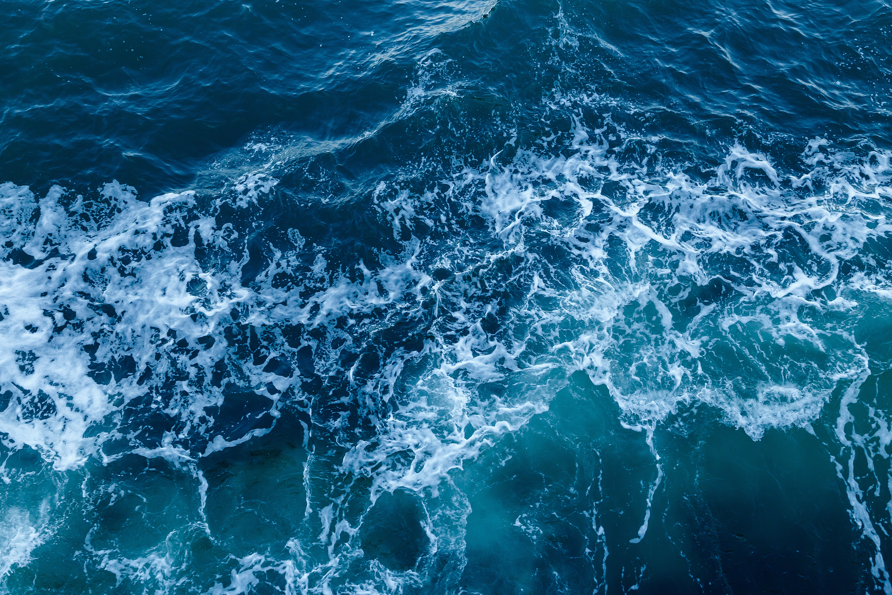
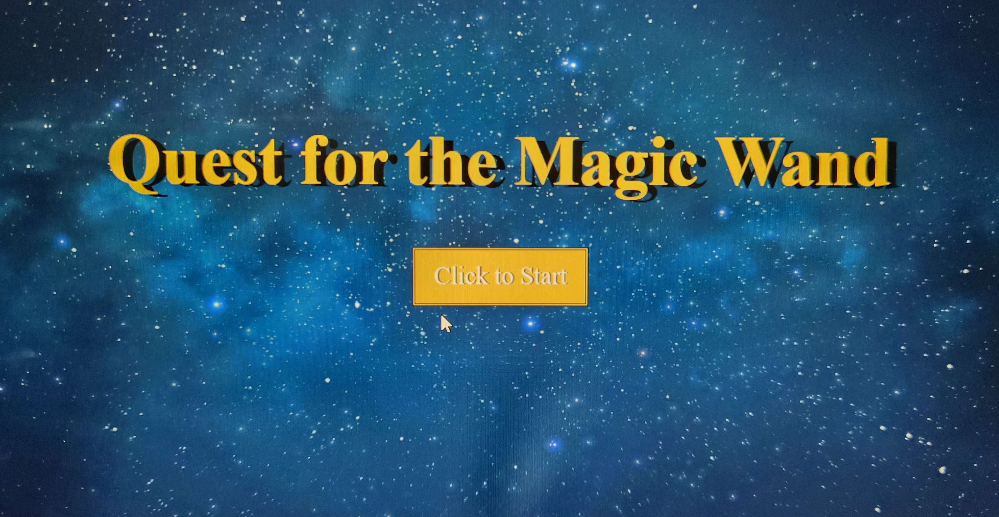
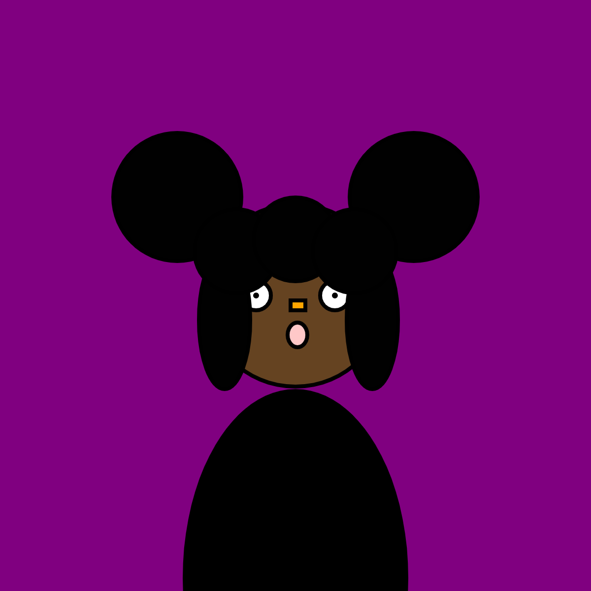
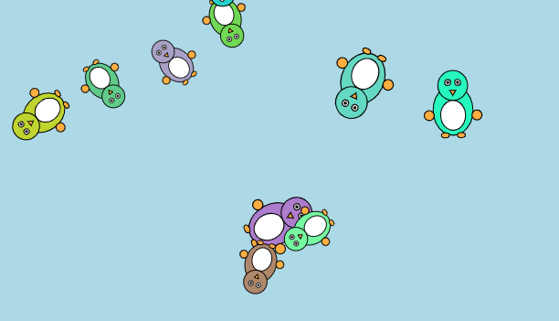

Coding Art
A collection of websites, interactive experiences, p5.js experiments, and creative coding projects.
Net Art

Made for Art 74, this project allowed me to dive into my first time creating a website and learning about HTML through Github and Notepad+++. Titled "Welcome to the Deep Blue Sea."
Visit WebsiteNet Art 2

Made for Art 74, this website was made as project that I wanted to continue as I grow a bigger interest in using HTML, CSS, and Javascript. Although this work is not yet complete, I will come back to it to continue it to see how far I have came with my artwork. Made with Notepad+++, Github, and Photoshop, this site is an interactive net art where you go on a quest to look for the magic wand.
Visit WebsiteCode Art Piece

Made in Art 74, this was my first time making images from code by itself and as a result, I created a self-portrait.
Penguin Playground

An interactive p5.js artwork featuring animated penguins that move throughout the canvas. Users can add penguins with mouse clicks and alter their behavior through keyboard interactions.
Launch Interactive Work